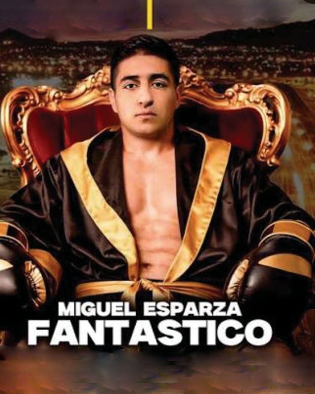

← Nuestros peleadores
Miguel Esparza · Fantástico

Ciudad Juárez, Chihuahua · 22-1-0, 15 KO’s
Un niño inquieto que encontró en el boxeo la forma de encausar su energía, comenzó a competir desde muy pequeño representando pronto a Ciudad Juárez en torneos regionales donde su talento lo llevó a destacar del resto; invadiendo el terreno profesional con autoridad a los 17 años mostrando grandes cualidades y una pegada de mucho respeto; alargando su invicto hasta la disputa del cinto de Norteamérica (NABF) de la IBF en duelo de invictos frente al tapatío Daniel ‘Alemán’ García que inició una racha de nocauts que lo acercaron a los primeros sitios de los rankings, derrotando en fila al argentino Néstor ‘Ch’ Maidana, el ex campeón mundial sudafricano Tshifiwa Munyai, el japonés Shun Sekine Takeda, el colombiano John Asprilla que lo sitúan como uno de los noqueadores más peligrosos de la actualidad en la baraja boxística mexicana.